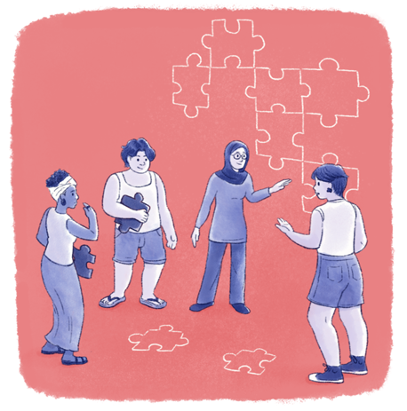
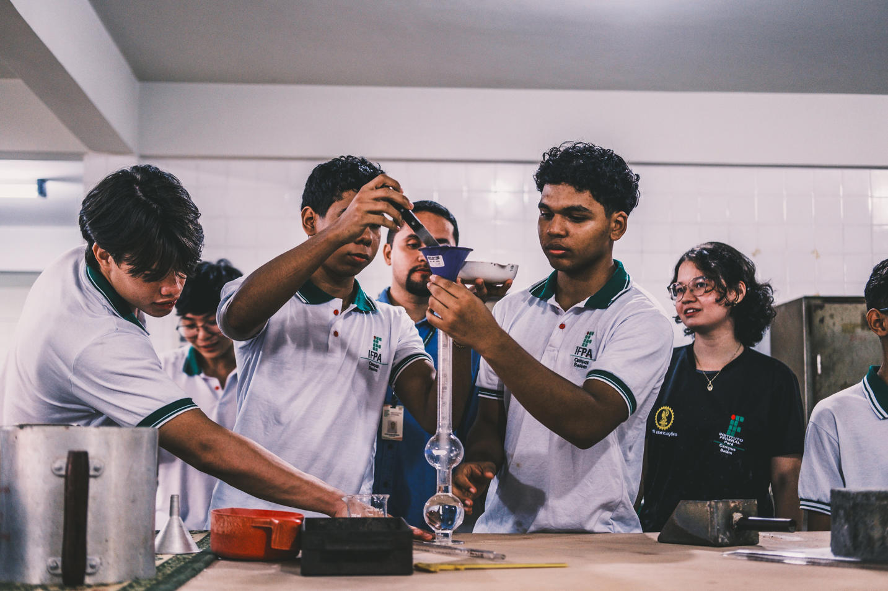

Qualificação
O termo qualificação tem muitos significados e formas de uso, ora se referindo ao conceito sociológico, ora à modalidade educacional (acrescentando o adjetivo “profissional”). Verificamos uma falsa identidade entre educação e qualificação profissional, como se esta se reduzisse a uma modalidade daquela. Essa utilização, encontrada tanto na linguagem coloquial como em trabalhos acadêmicos, refere-se, por um lado, a concepções teóricas sobre a relação entre o trabalho e educação, e, por outro, à estratégia dos agentes sociais em demarcar campos e utilizar os conceitos para os seus próprios fins.
A maneira distorcida de relacionar “educação e trabalho” se diferencia – e não apenas em termos semânticos – da relação dialética entre “trabalho e educação”. Essa distorção oculta as lutas que ocorrem desde a base econômica, como as hierarquias no ambiente de trabalho, passando pelas classificações de ocupações e planos de cargos e salários, até o reconhecimento social de títulos profissionais e acadêmicos. Isso contrasta com os saberes e conhecimentos que são realmente construídos na vida e no trabalho.
É fundamental aprofundar a discussão sobre o conceito de qualificação, que tem suas raízes na sociologia do trabalho. Embora tenha sido relevante nos debates educacionais no passado, seu uso tem diminuído nas produções recentes, especialmente em relação à análise e à formulação de políticas públicas para a Educação Profissional. Portanto, é crucial entender as intenções dos agentes sociais em relação à formação, às habilidades e ao valor dos trabalhadores, indo além de meros processos descritivos de habilidades e competências.
Temos, portanto, como ponto de partida, três concepções principais:
- Qualificação vinculada às demandas do posto de trabalho, aos atributos individuais e à estrutura organizativa da empresa;
- Qualificação relacionada ao grau de autonomia do trabalhador, comportando processos de e, em decorrência, de posições como o , de verificação da e da ;
- Qualificação como construção social, complexa, contraditória e multideterminada.
Ou seja, qualificação é o conjunto de relações sociais entre trabalho e educação que permite a aquisição e utilização de conhecimentos, experiências e capacidades técnicas e sociais. Assim, isso torna seus “portadores” capazes de transformar a natureza e a si mesmos, gerando valores de uso, novos conhecimentos e novas relações sociais, incluindo uma forte produção simbólica, que é parte fundamental de uma cultura e de identidades específicas, a
Em relação à complexidade do mundo do trabalho, é preciso reconhecer a heterogeneidade das experiências de trabalhadores, que surgem de tarefas e qualificações diferenciadas, influenciadas pelas relações de trabalho.
Então, quais seriam as condições concretas para um projeto de qualificação profissional individual? Fatores como a necessidade imediata de sobrevivência, a origem regional e a qualificação anterior impactam essa formulação. Além disso, existem distinções de gênero, a partir das quais os homens têm acesso mais amplo à qualificação, enquanto as mulheres enfrentam oportunidades limitadas, frequentemente ligadas a suas trajetórias pessoais, como a maternidade. A ética do provedor, presente no universo masculino, cria barreiras para a mudança, pois os homens buscam estratégias para aumentar a renda familiar. Por outro lado, as mulheres, apesar de serem consideradas competentes nos seus postos de trabalho, não recebem a remuneração condizente e sofrem preconceito e discriminação por sua condição feminina, e são recorrentemente vistas como exigentes e nervosas.
Mulheres na EPT
As pesquisas da Sociologia do Trabalho mostram que homens e mulheres, sobretudo no meio operário, apresentam formas diferenciadas de ver o trabalho. É fundamental distinguir isso, pois, na Educação Profissional, as mulheres já são maioria, mas o processo de ensino-aprendizagem continua, com raras exceções, desconhecendo este fato.
Para aprofundar a temática, sugerimos que você assista ao vídeo a seguir:
- Desafios para as Mulheres Brasileiras Urbanas no Mundo do Trabalho (2022), trabalho derivado da dissertação de mestrado de Suzana Victor da Costa, intitulada "Obstáculos para Mulheres no Mundo do Trabalho: Um Olhar do Feminismo Marxista e da Educação Profissional e Tecnológica (EPT)" (2022), do Instituto Federal do Rio de Janeiro.
No contexto masculino, trabalhadores qualificados vivenciam uma ética coletiva valorizada pela combinação de conhecimento teórico, prático e tácito, que se traduz em prazer e valorização do trabalho. Na fábrica, todos respeitam aquele trabalhador que conhece o seu ofício. Nesse sentido, o desemprego afeta mais fortemente a saúde mental dos homens, que perdem o papel de “provedor” e os laços sociais que os apoiam; por outro lado, estes também, geralmente, recusam empregos que exigem menor qualificação.
Em contrapartida, sem que isso represente aceitação ou passividade, as trabalhadoras enfrentam a questão do desemprego, mas reconhecem o valor de seu trabalho pela qualidade do que realizam, mantendo uma relação positiva com a sua atividade, mesmo em condições de desqualificação e baixos salários. Neste sentido, a luta das mulheres por igualdade salarial, por mais oportunidade de qualificação e de carreira se torna central na atualidade.
A qualificação como uma construção social tem sua gênese no local de trabalho. Embora existam agências formadoras de mão-de-obra, como patronais, estatais e de trabalhadores, a formação contínua e a transmissão do conhecimento são, na verdade, moldadas pela cultura empresarial e pela interação entre os trabalhadores. A subjetividade dos indivíduos é um fator crucial nesse processo, pois permite que conhecimentos e saberes individuais se tornem coletivos e, muitas vezes, tenham impactos significativos na inovação e na dinâmica do trabalho.
"A qualificação é um elemento fundamental na luta pela hegemonia, pois envolve a formação de uma consciência crítica nas classes subalternas"

Título: Saberes coletivos
Fonte: Prosa (2024e).
Qualificação e reestruturação produtiva
Além disso, a qualificação se mostra um tema multidisciplinar relevante em contextos de reestruturação produtiva. O aumento da demanda por trabalhadores mais qualificados e com habilidades e competências diversificadas acompanha a rápida inovação tecnológica e a necessidade de adaptação perante as novas realidades do mercado.
Contudo, essa busca por profissionais qualificados contrasta com a desestabilização de vários setores e resulta em formas precárias de trabalho e desemprego: há uma tensão entre a necessidade de valorização do trabalhador por meio do enriquecimento do trabalho e o risco de alienação. Tais mudanças nas relações de trabalho afetam a padronização conquistada pelas lutas sindicais ao longo dos anos. A flexibilidade nos contratos de trabalho resulta em precarização e privatização de riscos. Assim, a “educação para o trabalho” precisa ser repensada, pois não pode garantir a inserção no mercado diante das novas exigências e instabilidades.
Os processos de qualificação atuais – na ótica hegemônica – visam desenvolver competências de longo prazo, que incluem habilidades de adaptação a novas situações e aprendizado contínuo. No entanto, a crescente mediação da tecnologia também resulta em um maior controle sobre trabalhadores, gerando desafios adicionais. Nesta ótica dominante, os processos educacionais precisam ser ressignificados, ultrapassando a visão funcionalista tradicional. A divergência entre as visões de empresários e trabalhadores impõe a necessidade de uma abordagem mais inclusiva e capaz de responder verdadeiramente às demandas da sociedade e não apenas ao mercado de trabalho. A escolarização inicial deve ser de qualidade e longa, de qualidade e integral, de modo a preparar os indivíduos não para uma demanda imediata do mercado, mas para uma percepção mais ampla do mundo do trabalho.

Título: Formação de qualidade e integral para o mundo do trabaho
Fonte: Schüler (2023f).
Por fim, os setores hegemônicos consideram que a defasagem entre a educação e o mercado de trabalho fundamenta um cenário de crise educacional.
Para eles, as reformas curriculares devem promover flexibilidade e uma visão global sobre os processos de trabalho, garantindo a relevância da qualificação profissional no contexto atual. A necessidade de pesquisa contínua e acompanhamento das políticas educacionais se faz evidente, questionando se o conceito de qualificação deveria ser substituído pela noção de competência e como isso se alinha às demandas de um mercado em transformação, principalmente frente aos novos modelos produtivos e às realidades que surgem deles.
Entretanto, apesar da adoção da noção de competências pelo polo hegemônico (mais adequado a processos formativos alinhados com o mercado de trabalho), o conceito de qualificação, conforme descrito aqui continua extremamente útil, uma vez que desvela as contradições inerentes ao processo e permite questionamentos e intervenções dos principais interessados, os sujeitos trabalhadores.
É importante destacar a importância de um processo contínuo de pesquisa e acompanhamento das políticas de Educação Profissional, levando em conta as demandas dos agentes sociais dos polos hegemônico e contra hegemônico. Por exemplo, ao explorar as implicações do toytismo na formação dos trabalhadores, verifica-se que este modelo resulta em profissionais polivalentes com qualificações superficiais; por outro lado, leva à formação de um número bastante reduzido de trabalhadores mais qualificados e autônomos, capazes de entender e dominar o fluxo produtivo.
A possibilidade de desenvolver uma formação politécnica e abrangente, que respeite a autonomia e a cidadania, assim como a relação entre a formação no local de trabalho, coloca a necessidade de reconsiderar os sistemas educativos, integrando a Educação Profissional à Educação Básica como parte da luta pela democratização da educação pública a partir da quebra do modelo dual.
Em resumo, a concepção de qualificação como relação social além das considerações anteriores – e tendo em conta especificamente os nexos entre educação e qualificação profissional – se caracteriza por:
- Incluir, necessariamente, algum tipo de educação, embora não se resuma ou corresponda exclusivamente a ela;
- Não estar dissociada da Educação Básica e da formação político-social;
- Ser um processo que envolve o conhecimento da cultura geral e técnica, sua reelaboração e uso;
- Não estar limitada à formação profissional oferecida por instituições formais, mas que inclua os processos de ensino e aprendizagem ao longo da vida: leitura, interpretação e assimilação de experiências vividas, tanto individual quanto coletivamente;
- Ser, além disso, parte importante do processo de apropriação do conhecimento social, patrimônio da humanidade, na busca de sua própria emancipação, especificamente por possibilitar controle sobre o processo de trabalho e contribuir fortemente para a formação de identidades.
Deste modo, a qualificação deve ser concebida como parte do processo de disputa de hegemonia na sociedade, que tem um dos seus focos no local de trabalho, mas que se espraia para as concepções de educação e para a disputa do Estado.